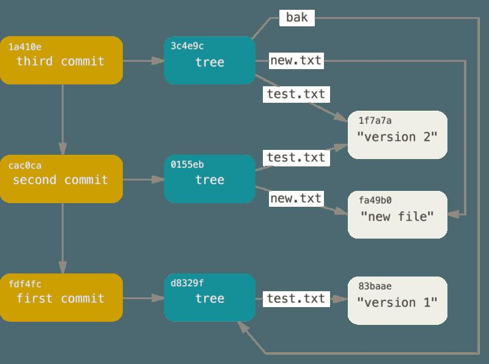

commit & branch
git每次commit都会产生若干objects。例如:
$ git add README test.rb LICENSE $ git commit -m 'The initial commit of my project'
会产生3种objects：对每个文件产生一个blob对象，包含文件内容；一个tree对象，列出目录中的内容，以及哪个blob对应哪个文件；一个commit对象，包含指向tree对象的指针，以及commit元数据（author、commiter）

所有的commit对象，像链表一样连接在一起，每个commit都有指针指向前一个commit。每个commit对应整个repo的一个快照。

branch、tag就像指针一样，指向这个commit链表的某个位置。Git如何知道你当前在哪个branch呢？通过保存一个特殊的指针HEAD，它永远指向你当前的本地分支。
每次commit后，branch的指针就会前进。
Git Objects
Git是一个文件系统，这表示git是一个key-value存储。只要你插入任何内容，它都会给你返回一个key，用于取出数据。Git中有3种object：blob、tree、commit。类似UNIX文件系统，blob object对应文件；tree object对应目录；commit object对应一次commit。
Blob Object
blob object对应文件，它包含一个header(blob <content-length>0)以及zlib压缩过的文件内容。记住，git对文件的每个版本，都会生成一个blob，包含该文件的完整内容。
下面我们来看一下git如何保存一个文件的2个版本。首先保存第一个版本的文件:
$ echo 'version 1' > test.txt $ git hash-object -w test.txt 83baae61804e65cc73a7201a7252750c76066a30
然后我们对文件做了改动，并保存第二个版本:
$ echo 'version 2' > test.txt $ git hash-object -w test.txt 1f7a7a472abf3dd9643fd615f6da379c4acb3e3a
现在，我们将文件返回到第一个版本:
$ git cat-file -p 83baae61804e65cc73a7201a7252750c76066a30 > test.txt $ cat test.txt version 1
也可以返回到第二个版本:
$ git cat-file -p 1f7a7a472abf3dd9643fd615f6da379c4acb3e3a > test.txt $ cat test.txt version 2
注意，以上操作中，我们只用blob object存了文件的内容，而没有存储文件的名字。
Tree Object
Tree object对应一个目录，包含该目录下的文件(blob)以及子目录(subtree):
$ git cat-file -p master^{tree}
100644 blob a906cb2a4a904a152e80877d4088654daad0c859 README
100644 blob 8f94139338f9404f26296befa88755fc2598c289 Rakefile
040000 tree 99f1a6d12cb4b6f19c8655fca46c3ecf317074e0 lib
Commit Object
Commit object对应一次commit，包含顶级目录的tree object以及author、commiter等信息:
$ git cat-file -p fdf4fc3 tree d8329fc1cc938780ffdd9f94e0d364e0ea74f579 author Scott Chacon <schacon@gmail.com> 1243040974 -0700 committer Scott Chacon <schacon@gmail.com> 1243040974 -0700 first commit
执行git cat-file -p d8329fc1cc938780ffdd9f94e0d364e0ea74f579，会发现这个tree object是repo顶级目录的tree object。
git objects的结构图如下图：
Git reference
Git refercence是给commit取的容易记住的名字，它们都存放在.git/refs目录下，目录结构如下：
.git/refs/heads: 存放曾经切换到的branch的ref文件
.git/refs/remotes: 存放remote branch的ref文件，比如refs/remotes/origin、refs/remotes/upstream
.git/refs/tags: 存放tag的ref文件
HEAD
.git/HEAD保存你当前所在branch的reference，例如 ref: refs/heads/master
tag
tag分为两种，一种是轻量级的、仅有一个commit号的；另一种是有注释的，这种tag也是一种object，其内容如下:
$ cat refs/tags/12-SP3 7d70e746501a9e745b9a7c62be3e15d7ac78cec1 $ git cat-file -p 7d70e746501a9e745b9a7c62be3e15d7ac78cec1 object ce63fcbb5fdc051f5a7fa88ed76e660a8f9bb51f type commit tag 12-SP3 tagger Nathan Zhao <phantomwolf47@gmail.com> 1496545242 +0800 testing only
可见它包含了对应commit的sha1 hash、tag名字、作者的名字与email、注释信息。打印ce63fcbb5fdc051f5a7fa88ed76e660a8f9bb51f的内容，会发现这是一个commit object，即创建tag时的最后一条commit:
$ git cat-file -p ce63fcbb5fdc051f5a7fa88ed76e660a8f9bb51f tree 7a61dcec4e37adb75d238c81c5d7205e0202acf4 parent 3ccf12533847416833f124d6a99f57a2c6927ec1 author Jia Li <jli@suse.com> 1456403175 +0800 committer Jia Li <jli@suse.com> 1456403175 +0800 qa_test_dbench:Add test case of tbench
remote
你添加的remote，都能在refs/remotes里找到。remote reference与branch不同，是因为他们是只读的。你可以checkout到某一个remote reference，但是这样会让你处于detached HEAD状态，不能像普通branch那样用commit命令对它进行修改。你只能通过git push来修改它们。
Packfile
当你将一个文件稍作修改，再次commit后，git会保存2个版本的object，生成两个大小相近的blob object，占用2倍的空间。git能不能只保存一份文件，另一份文件保存为delta呢？
答案是可以的。当你在git push时，或者git gc时，git会将相似的object打包，生成.pack和.idx文件，前者是一个包含很多object的二进制文件，后者是前者的索引。用以下命令可以查看pack文件的内容:
$ git verify-pack -v .git/objects/pack/pack-aa038992e3454354186b2cf1f4ef160a932c52e9.idx 26d043d9a13432094d03bbe5e2580dc2f0a0f01d tree 8 18 3332556 9 8d35d69698047fad3469848aa2354d352b57c193 596c8a24ee716da93311d767a43e2a7c8edf72d2 tree 75 83 3332574 df82fb904fdc2929f203b0cefa4b991960ea0395 blob 28 31 3332657 ...
值得注意的是，有时文件的新版本被存储为普通的blob，而旧版本反而存储为delta。这是因为我们更有可能访问新版本。